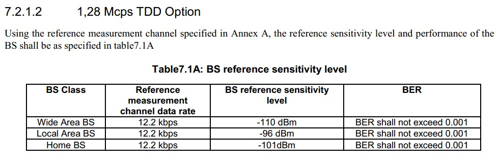
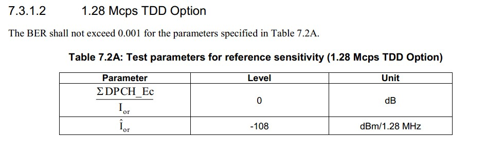

静态参考灵敏度是指接收机在规定的BER（<=0.001，0.1%）的要求下的最小接收功率（<=-110dBm）。
静态参考灵敏度与高斯白噪声，接收机热噪声以及接收机载干比解调门限有关：
其中


参考资料：接收机静态参考灵敏度和WCDMA整机噪声系数的理论计算
WCDMA系统基于直接序列扩频通信技术，具有扩频增益，它的解调门限（Eb/Nt）较低，可以为负值，这样有利于提高接收机的灵敏度，同时也降低了对射频前端本身的噪声要求。
WCDMA 系统中，基站和移动台之间的信息交换是以幀为基本单位的。每幀包含业务信道（语音或数据）、寻呼信道、导频信道和同步信道的信息。因此，对于 WCDMA基站性能的评价都是建立在一定的帧误码率（FER）的基础上。
根据 WCDMA规范，在采用BPSK数据调制及12.2Kbps全速率语音编码和静态高斯噪声信道传输条件下，满足输入信号为 Pmin=-121dBm 时 FER=0.01 要求的最低 Eb/No 为5.1dB，在此基础上增加 2dB 的设计余量，则要求 Eb/N0>7.1dB。由扩频系统方程，
Eb/No= Eb/Nt+Gp （dB） (4)
其中，Gp为系统扩频增益
Gp=10Log(BW/RINFO)= 10Log(3.84Mcps/12.2Kbps)=25dB (5)
则解调门限为 Eb/Nt=-17.9dB
由此，为了得到在满足 FER=0.01 条件下接收机输入灵敏度为-121dBm，接收机射频模拟前端的最大噪声系数为：
Nf=Pmin-(-108.15)-Eb/Nt =-121+108.15+17.9=5.05 dB
也就是说，按照3GPP规范要求，我们所设计的接收机射频模拟前端的静态噪声系数必须满足 Nf<5.05 dB
静态参考灵敏度是在静态传播情况下测得的数值，是衡量接收机性能好坏的一个重要指标。但在实际工作中，由于接收机所处的环境非常复杂，移动通信信道不可能是一个静态信道，有用信号不可能无衰减、无干扰地通过空间介质到达接收机。
事实上，它是一个多径衰落信道，发射的信号要经过直射、发射、散射等多条传播路径才能到达接收端，而且随着移动台的移动，各条传播路径上的信号幅度、时延及相位随时随地地发生变化，因而接收信号 的电平是起伏和不稳定的，这些多径信号相互叠加形成衰落；另外除有用信号能进入接收机外，干扰信号（如同频、邻频干扰信号）也会进入接收机，造成对有用信号的干扰。所有这些不利因素都会降低接收机的接收效果，为了改善接收机在多径、频率干扰传播环境的接收 能力，使它能达到静态信道下的接收效果，在移动通信系统中采取了许多措施，例如分集接收、基带跳频、射频跳频、均衡算法等，这一系列措施都是为了保证基站接收机在复杂的多径、频率干扰环境里灵敏度仍能接近或达到静态参考灵敏度的数值。